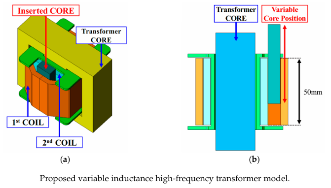
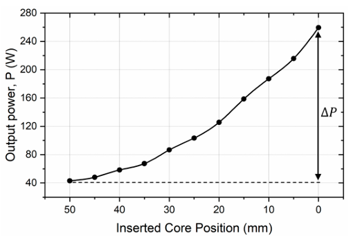
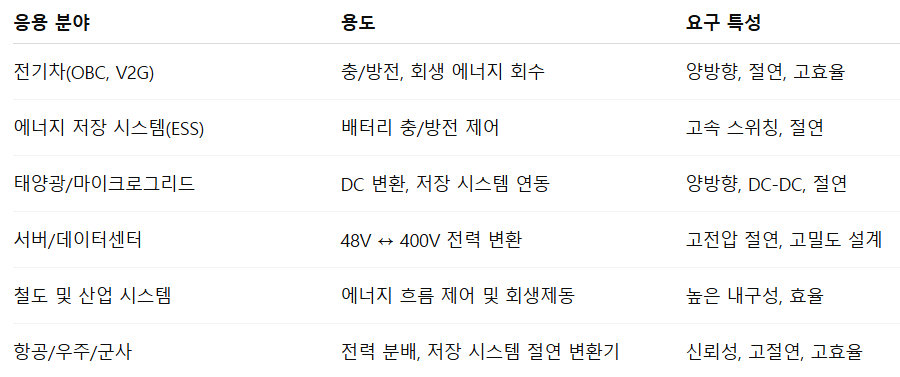
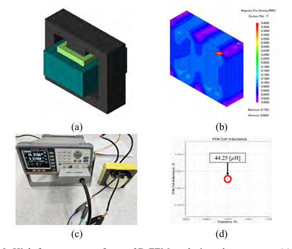

AREA 01
DC-DC 컨버터(DAB) 출력 향상 설계 및 고장 진단/예측
DAB(Dual Active Bridge) 컨버터는 고효율, 양방향 전력 흐름, 고주파 절연이 가능해 전기차(OBC · V2G), ESS, 태양광/마이크로그리드, 데이터센터, 철도 및 항공 등 다양한 분야에 사용됩니다.
- 코어 삽입형 가변인덕턴스 고주파 변압기를 이용한 출력 범위 · ZVS 영역 확장
- SiC MOSFET 기생 커패시턴스와 환류 다이오드 특성을 고려한 위상각 보상
- DAB 동작 특성을 이용한 누설인덕턴스 온라인 추정 및 고장 예측
- 리액터 일체형 · 공유형 변압기/리액터 출력밀도 최적 설계
Power-Enhanced Design and Fault Diagnosis/Prognosis of DC-DC Converters (DAB)
Dual Active Bridge (DAB) converters offer high efficiency, bidirectional power flow, and high-frequency isolation, and are used in EVs (OBC · V2G), ESS, PV/microgrids, data centers, railways, and aviation.
- Extending the output range and ZVS region with a core-insertion variable-inductance HF transformer
- Phase-shift compensation considering SiC MOSFET parasitic capacitance and freewheeling diode characteristics
- Online leakage-inductance estimation and fault prognosis using DAB operating characteristics
- Power-density-optimal design of integrated and shared transformer/reactor structures







Selected: A Novel Structure of Variable Inductance High-Frequency Transformer for Power Level Enhancement in Dual-Active-Bridge Converters, Energies, 2025.02 (SCIE)
Novel Phase Shift Angle Compensation Method of DAB Converter Considering Parasitic Capacitance of SiC MOSFET, IEEE Access, 2024.01 (SCIE)
Novel Phase Shift Angle Compensation Method of DAB Converter Considering Parasitic Capacitance of SiC MOSFET, IEEE Access, 2024.01 (SCIE)